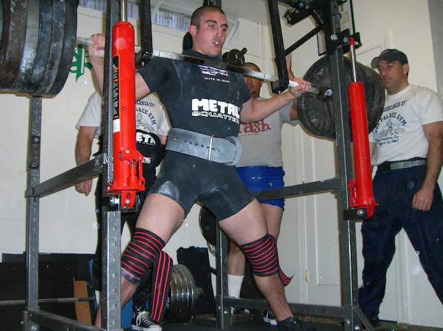

B343 · Joint SPACE, why your body needs it...
Hi {first_name},
Here's a curious question for ya, "how would you like to age?"
I invite you to take a moment and reflect on this.
While I was meditating this weekend, I sat with this and a time from my past came up.
I was 19 and the “strongest” I've been in my entire life.
Squatting and deadlifting over 600lbs, and bench pressing over 450lbs.
I could push a very respectable amount of weight, (which was awesome) however parts of me were frustrated too...

For my job as a strength coach, I had to demonstrate many athletic movements to my athletes on a daily basis.
I LOVED feeling super strong, however, I was stiff, rigid, and my body simply didn’t feel great. Little injuries would pop up, like a strained pec and shoulder, neck tweaks, lower back discomfort when I'd sleep, and more.
If you’re like me then at least a handful of times in your life, you may have said the following:
“If I only knew then what I knew now…”
And while I do believe that everything happens for a reason, to teach us something our own evolution, there are certain things that I know would have been SO helpful to know.
Three of those things with regards to movement are the importance of:
When I think of one of the biggest game-changers for me, the addition of a precise and specific postural strengthening program with ELDOAs were it for me.
ELDOAs allowed me to improve all of the above and:
If you want not just to move, but move well and freely as you age, then I highly recommended signing up for an opportunity coming up this weekend.
I’m bringing in ELDOA certifying instructor, Justin Brien, on Saturday 2/20 to teach a 90 minute ELDOA virtual workshop + guided ELDOA workout (note - you can access the recording if you cannot make it live).
Here is a personal invitation from Justin, as well as more on this impactful method.
I believe in the results so much that these postures (they only take 1 minute btw!), can provide, that even if it’s not something you may be interested in right now, please do share with any friends and family members who either may be in pain, or looking to level up their performance for the longterm.
Click here to register and for more info.
Wishing you all the best, |